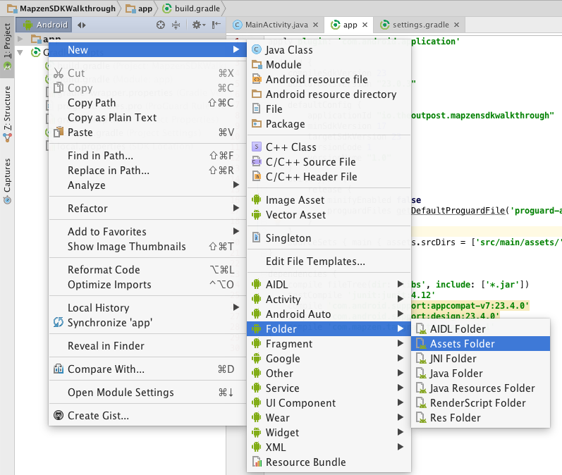

Tangram Android SDK
Tue Jun 21 2016
The Tangram Android SDK is a Gradle package that makes it easy for you to include Tangram ES in an Android application. Keep in mind that this is different from the Mapzen Android SDK. The Mapzen Android SDK is a wrapper that includes all of Mapzen services in your Android application. That includes other projects like LOST, On the road, and Pelias, as well as Tangram ES.
Installation Notes
There is a good walkthrough on getting a Tangram ES map working in Android via the Tangram Android SDK. However, I have some additional notes that helped me get the Mapzen Android SDK working.
One little gotcha I found was adding the bubble wrap style to the app's assets. The instructions say to add:
sourceSets.main.assets.srcDirs = ['../styles']
to the build.gradle, but that's not quite enough. Instead, I right clicked on the app folder and added an assets folder via a dialog. I did the default location, which is good, because this is the pattern I find in most apps. Now, the build.gradle file specifies the assets as:
sourceSets { main { assets.srcDirs = ['src/main/assets/'] } }
Note that this is the build.gradle (Module: app).

Now that we have created this directory, I put the bubble-wrap project in that directory.
Also, the path to the scene file in the tangram-android-demos is incorrect. It really should be:
view.getMapAsync(this, "bubble-wrap/bubble-wrap.yaml");
We do this same path with having the assets directory setup as described above.
Example Project
My working SDK Walkthrough can be found here: